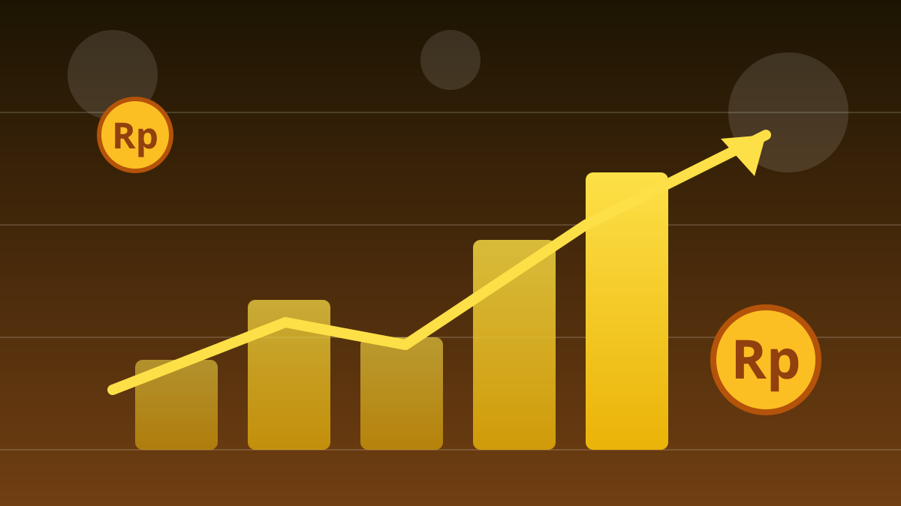

1 / 7

💰 EKONOMI
Ayam Rp20 Ribu di Kandang, Rp45 Ribu di Pasar — Kok Bisa?
Selisihnya lebih dari 2x lipat. Mentan sampai nyebut ada "mafia pangan". Geser buat spill-nya →
2 / 7
🏛️
Dibahas di Rakor Senin Kemarin
Mentan sekaligus Kepala Bapanas Andi Amran Sulaiman menyoroti anomali harga ayam dan telur dalam Rapat Koordinasi Pengendalian Inflasi Daerah di Kantor Kemendagri, Jakarta, Senin 12/10/2026.
Rakor itu digelar bersama Mendagri Tito Karnavian — artinya pemerintah pusat menganggap ini masalah serius, bukan gosip pasar.
3 / 7
📉
Anomalinya Gila: Jomplang 2x Lipat
Harga ayam dan telur di tingkat peternak (farm gate) anjlok ke Rp20.000–Rp21.000/kg — di bawah harga pokok produksi.
Tapi di tangan konsumen, harganya melambung Rp40.000–Rp45.000/kg, bahkan beberapa sumber menyebut tembus Rp50.000. Ada "lubang hitam" di tengah rantai distribusi.
4 / 7
🕵️
Mentan: Ini Ulah "Mafia"
Amran menduga ada mafia alias middleman yang memainkan harga di rantai distribusi. "Ini mafia enggak boleh dikasih ruang," katanya.
Catatan penting: ini masih dugaan yang butuh penelusuran aparat, bukan vonis. Kementan sudah menyurati Kapolri untuk koordinasi penindakan — masalah ini sudah dibahas sekitar tiga minggu.
5 / 7
🐔
4,8 Juta Peternak Tertekan
Korban pertamanya: sekitar 4,8 juta peternak mandiri ayam dan telur yang terancam bangkrut. Mereka sempat menggelar demo pada 9 Oktober karena harga jual jatuh di bawah acuan pemerintah.
Upaya penyerapan produksi lewat program Makan Bergizi Gratis (MBG) melalui Badan Gizi Nasional dinilai belum cukup menyelesaikan masalah.
6 / 7
💬
Kata netizen
"Harga di tingkat peternaknya anjlok, tapi harga di tingkat konsumen nya tinggi" (Instagram, @detikfinanceofficial).
"Mafia mafia ki lak yo sopo to mafiane" (Instagram, Kumparan Bisnis) — netizen skeptis, menantang siapa yang dimaksud. "Di peternak, ayam masih ada bulu, usus, feses dll ... di pasar ayam sudah bersih" — pembelaan rantai distribusi. (Suara netizen — bukan fakta.)
7 / 7
🤔
Efeknya ke lo apa?
Ayam goreng, telur, nasi padang — menu survival anak kos langsung kena imbas. Kalau peternak kecil pada gulung tikar, pasokan makin dikuasai segelintir pemain, harga makin susah turun.
Amran menyebut harga ideal di kisaran Rp26.000/kg. Kalau polisi benar turun tangan dan rantai dibersihkan, dompet lo yang paling berasa duluan.